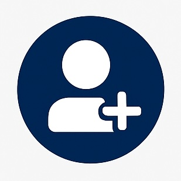

Tule mukaan
Aloittaa voi ilman mitään kokemusta. Koulutamme tehtäviin sekä tarjoamme asianmukaiset varusteet. Harrastus on ilmaista.
Lue lisääTapahtumat
Seuraa toimintakalenteriamme, tule mukaan tapahtumiin. Täältä löydät palokunnan uutiset.
Lue lisää